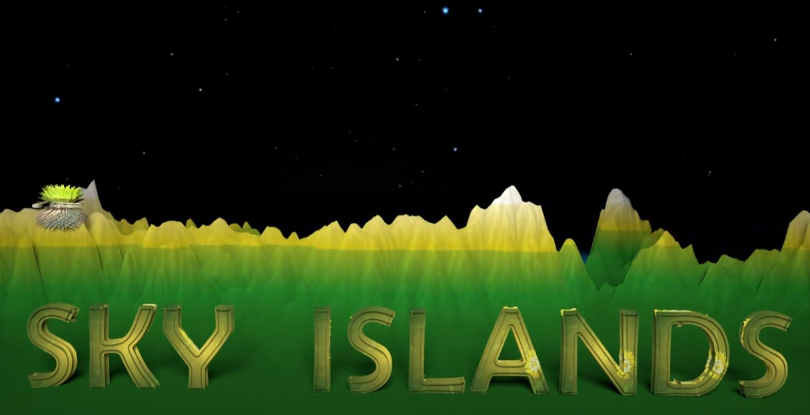

The Biogeographical History of the high elevational paramos of the Northern Andes? Sky islands - The flickering Connectivity System of the paramos of the Northern Andes. See our Youtube video!

Environmental film festivals
Our Sky Islands-visualization has been the Official Selection at international festivals screened in Angola, Australia, Brazil, Burkina, Colombia, Faso, Ethiopia, Hungary, Kenya, Malaysia, Namibia, Philippines, Rwanda, South Africa, United States.
Awards
Honorable Mention in the first edition of #EcoBrasil Fest. 22-29 April 2021.
Best Life Sciences Documentary of the #Sci-On Film Festival The Biggest Little Science + Fiction Film Festival in the World. 4-9 May 2021.
Excellence #Nature Without Borders International Film Festival, Nassau, Delaware, United States. 6 June, 2021.
Publications for the broad audience
Can Plants “Move” Fast Enough to Escape Climate Change? Here you can find our publication for Young Minds about climate change and how plants will respond Frontiers for Young Minds